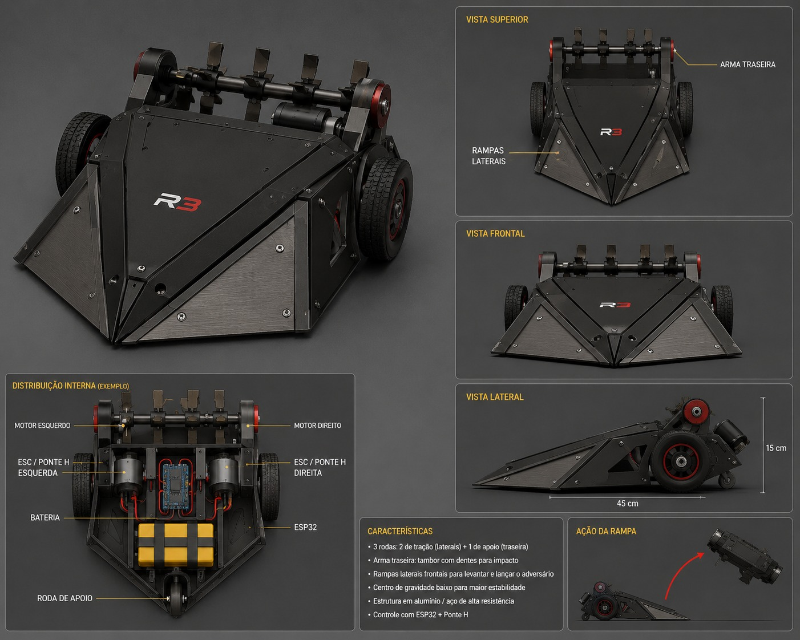

Sistemas Autônomos e Robótica
Black Widow — Robô de combate
Robô móvel de três rodas com tração diferencial, controle por ESP32 e rampa frontal para deslocar o adversário. Projeto da Engenharia da Computação da Universidade São Francisco.

Carregando sequência
Resumo do projeto
O que é o Black Widow
Este projeto tem como objetivo o desenvolvimento de um robô de combate para a disciplina de Sistemas Autônomos e Robótica. A proposta consiste na construção de um robô móvel de três rodas, sendo duas traseiras responsáveis pela movimentação e acionadas individualmente por motores elétricos, enquanto a roda dianteira terá a função de apoio e não possuirá acionamento próprio. Dessa forma, o robô poderá realizar movimentos de avanço, recuo e mudanças de direção por meio do controle independente dos motores traseiros.
Como elemento de combate, será desenvolvida na parte frontal do robô uma estrutura em formato de rampa, que terá como principal função atingir e deslocar o robô adversário durante as disputas. A estrutura será projetada considerando aspectos de resistência, estabilidade e distribuição de peso, buscando proporcionar maior eficiência durante a movimentação e o contato com o adversário.
Para o sistema eletrônico, pretende-se utilizar um microcontrolador ESP32 como unidade principal de controle, responsável pelo processamento dos comandos e pelo acionamento dos motores. O sistema constará também com uma ponte H para controlar o sentido de rotação e a velocidade dos motores, utilizando sinais PWM fornecidos pelo ESP32. Além desses componentes, serão utilizados motores de corrente contínua, bateria e componentes necessários para as conexões elétricas e o funcionamento do robô.
Ficha técnica
Especificações
- Controlador
- ESP32
- Driver dos motores
- Ponte H dupla (L298N)
- Tração
- Diferencial — 2 motores DC traseiros + roda dianteira livre
- Controle de velocidade
- PWM
- Comunicação
- Wi-Fi em modo Access Point — interface web
- Arma
- Rampa frontal
Registro
Evidências
Registro fotográfico e em vídeo das etapas do projeto: 0 de 0 já documentadas. Os cards com contorno tracejado indicam registros ainda pendentes.
Equipe
Integrantes do grupo
-
Letícia Pereira de Araújo Campos
RA 202307384
-
Marcella Ramalho Simões Salles Neves
RA 202303851
Capitã -
Nathalia Lima Veiga
RA 202329537
-
Thales de Campos Conceição
RA 202331038